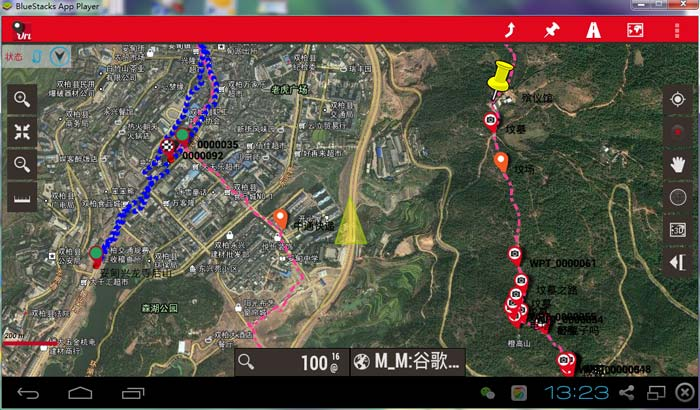
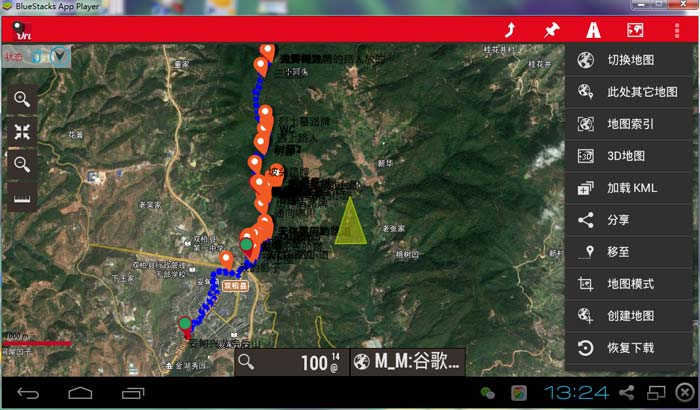
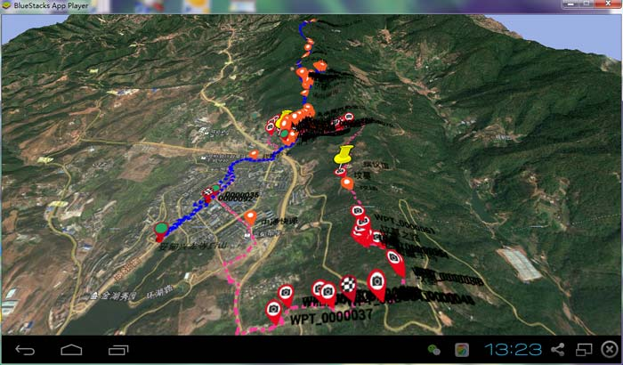

|
| 首页 | GeoTIFF | 今日花园Maps | OruxMaps | OZI | 资源 | 软件 | 联系 |
| 当前位置：OruxMaps ---> 在电脑上通过安卓系统模拟器运行OruxMaps程序 |
在电脑上通过安卓系统模拟器运行OruxMaps程序BlueStacks是一款在WINDOWS系统上运行的安卓系统模拟器，在安卓系统模拟器中可以运行任意的安卓应用程序包括OruxMaps程序。BlueStacks官方网址是：http://www.bluestacks.cn/。BlueStacks安卓系统模拟器的使用难点是怎样把地图文件、轨迹文件、图源文件等东西从PC电脑拷贝到BlueStacks安卓系统模拟器中的oruxmaps文件夹中？ 这时就需要使用安卓系统的RE文件管理器！在BlueStacks安卓系统模拟器中打开RE文件管理器，并找到SDCard的根目录，就会发现有一个名为Windows的文件夹。这个windows文件夹就是PC电脑上的一个文件夹。通常来说，这个windows文件夹在 “库\文档”中(即C:\Users\K'\Documents ，其中K'是你的用户名），那么，只需要找到电脑中的Windows文件夹的位置，就能将数据文件通过RE文件管理器拷至虚拟手机（BlueStacks安卓系统模拟器）的任意位置了！ 这台虚拟手机（BlueStacks安卓系统模拟器）和你的现实中的手机或平板没有区别！只要你的电脑能够上网，它也能上网！而且，不需要设置！ 在BlueStacks安卓系统模拟器中运行OruxMaps程序的效果如下图所示： |



| www.todaygarden.net |
版权所有 2010-2020 今日花园 |